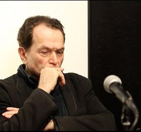
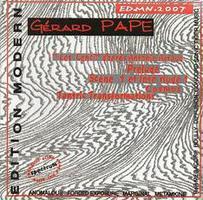
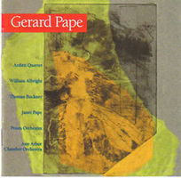

Gallery
A selection of posters, books, concert programs, album covers, manuscripts and other archival materials related to Gérard Pape.







A selection of posters, books, concert programs, album covers, manuscripts and other archival materials related to Gérard Pape.


